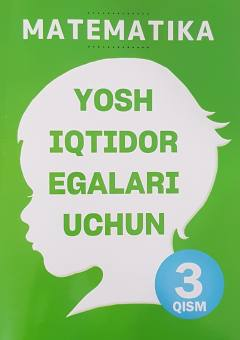

YIYosh iqtidor egalari uchun mo'ljallangan matematika fanidan amaliy o'quv qo'llanma.
Ushbu kitob yosh iqtidor egalari uchun mo'ljallangan matematika fanidan o'quv qo'llanmaning uchinchi qismidir. Unda to'plamlar, kombinatorika, kasrlar, foizlar va ma'lumotlar tahlili kabi mavzular nazariy va amaliy misollar bilan yoritilgan.